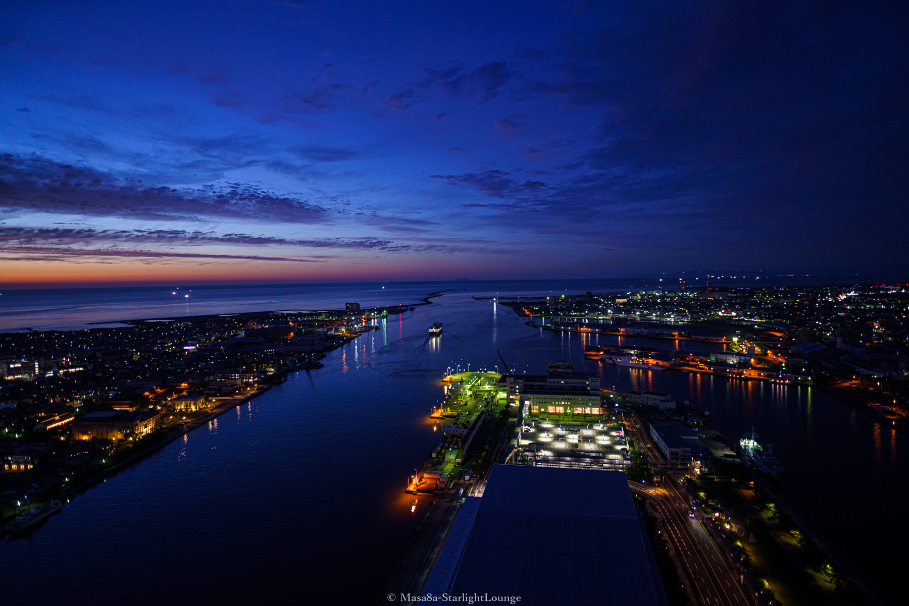
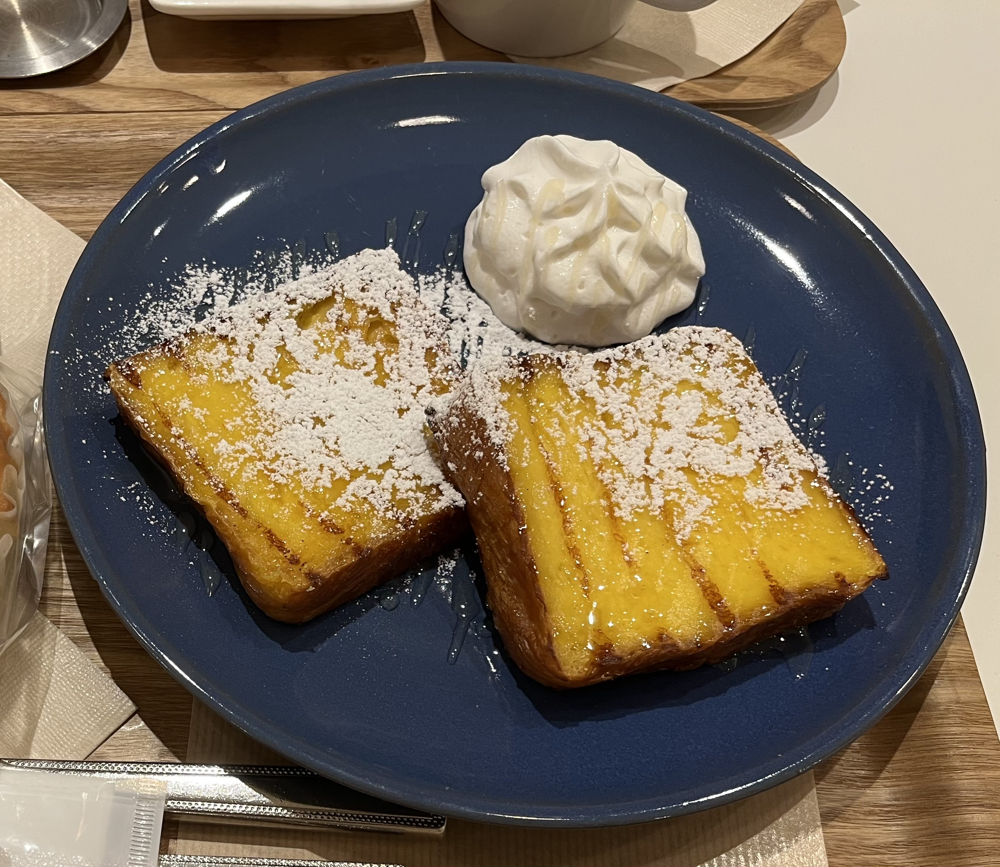

Profile

名前
川島拓也
趣味みたいなものは？
寝ること
長所みたいなのはどんなところ？
メンタルが強いこと
ちょこっとだけ自慢できることは？
精神的に病んだことがない
最近ちょこっとハマっているものは？
ゲーム
最近ものすごく美味い！と思ったのはなに？
最高に空腹だった時に食べた家系ラーメン
大大大好きな食べ物は？
フレンチトースト

ちょっと嫌いな食べ物は？
グリンピース
まず家に帰ってすることはなに？
煙草を吸う
その次にすることは？
足を洗う、または風呂に入る
平均睡眠時間は？
8時間
朝、出かける何時間前に起きる？
早くて1時間前、遅いと10分前
口癖は？
自覚がないからわからん、、、、
何フェチ？
指がきれいな人の手
ロト6で80万当たったら！？
そんな機会でもないと一生できなさそうなので貯金
えらそうな座右の銘は？
これから作りたい
18年後なにしてる？
web系の会社で働いていてほしい
とりあえず集めてるものは？
アイコスの空き箱
体を流れている血の液体の型は？
A型
なんか前世はこんな人かな？
自我が強いから多分前世も俺
ずばり！○○なタイプです！
スーパー天然